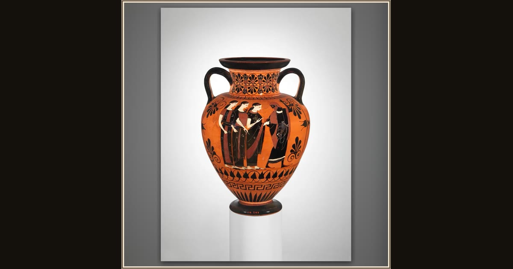

Terracotta neck-amphora (jar)
Swing Painter · ca. 540–530 BCE · met
An Attic black-figure amphora showing Poseidon with three women; Critias tells how the god wedded the mortal Cleito and ringed her hill with belts of sea and land (113d) Explore its place in Plato's Dialogues, Critias, section 37.